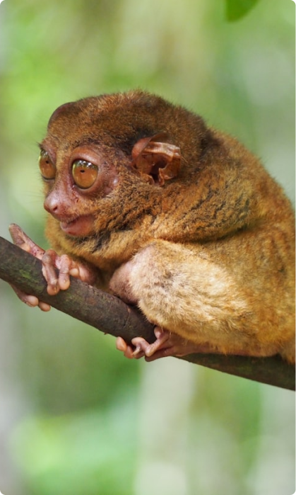

DARI LAPANGAN
Barda: Dari Nyaris Mati ke
Duta Konservasi
Ditemukan dengan luka tembak di kepala, kehilangan penglihatan, dan trauma mental mendalam. Tim YIARI memberikan perawatan medis intensif dan rehabilitasi jangka panjang.
Setelah berbulan-bulan perawatan, Barda kini hidup aman di pusat rehabilitasi kami. Ia menjadi simbol harapan yang menginspirasi ribuan orang untuk melindungi satwa Indonesia.
